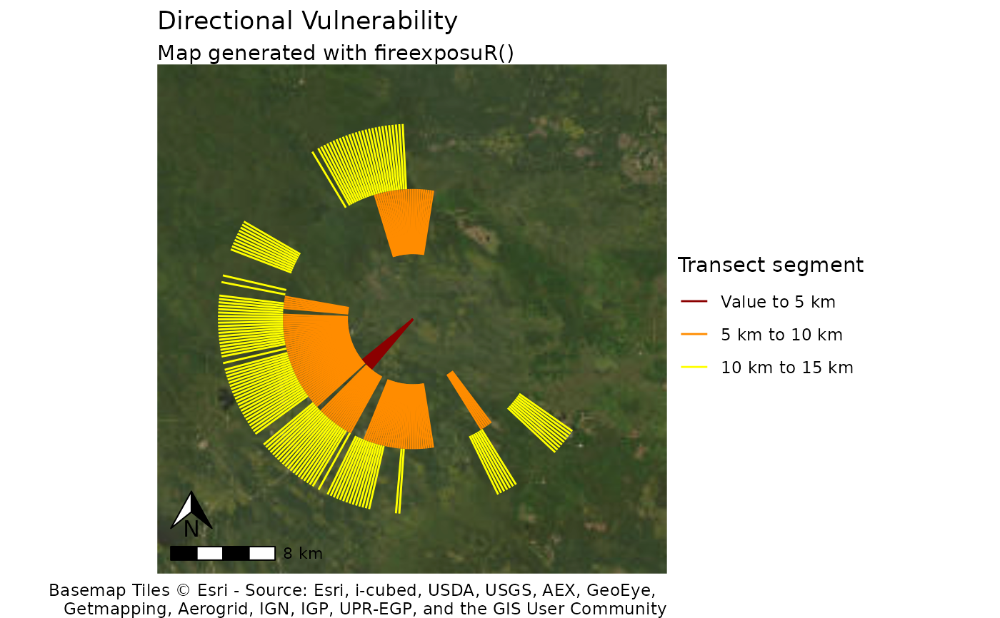

fire_exp_dir_map() plots directional exposure transects onto
a map.
Usage
fire_exp_dir_map(
transects,
value,
zoom_level = 10,
labels,
title = "Directional Vulnerability"
)Arguments
- transects
SpatVector. Output from
fire_exp_dir()- value
(Optional) SpatVector. Adds the value to the map. Use the same value feature used to generate the transects with
fire_exp_dir()- zoom_level
(Optional). Numeric. set the zoom level for the base map tile. See details. The default is
10.- labels
(Optional) a vector of three strings. Custom formatting for the distances in the legend. If left blank, the function will automatically label the distances in meters.
- title
(Optional) String. A custom title for the plot. The default is
"Directional Vulnerability"
Details
This function returns a standardized map with basic cartographic elements.
The plot is returned as a ggplot object which can be exported/saved to multiple image file formats.
Spatial reference
This function dynamically pulls map tiles for a base map. The inputs are projected to WGS 84/Pseudo-Mercator (EPSG:3857) to align them with the map tiles.
Zoom level
The map tile zoom level may need to be adjusted. If the base map is blurry, increase the zoom level. Higher zoom levels will slow down the function, so only increase if necessary. Reference the OpenStreetMap Wiki for more information on zoom levels.
Examples
# read example hazard data
hazard_file_path <- "extdata/hazard.tif"
hazard <- terra::rast(system.file(hazard_file_path, package = "fireexposuR"))
# generate an example point
point_wkt <- "POINT (400000 6050000)"
point <- terra::vect(point_wkt, crs = hazard)
# compute exposure metric
exposure <- fire_exp(hazard)
# generate transects
transects <- fire_exp_dir(exposure, point)
# map with customized distance labels
fire_exp_dir_map(transects, labels = c("5 km", "10 km", "15 km"),
zoom_level = 9)
